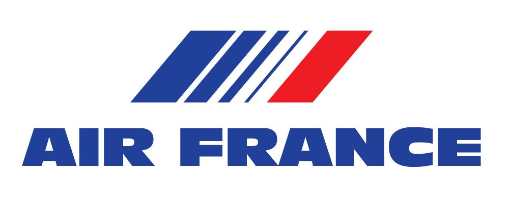
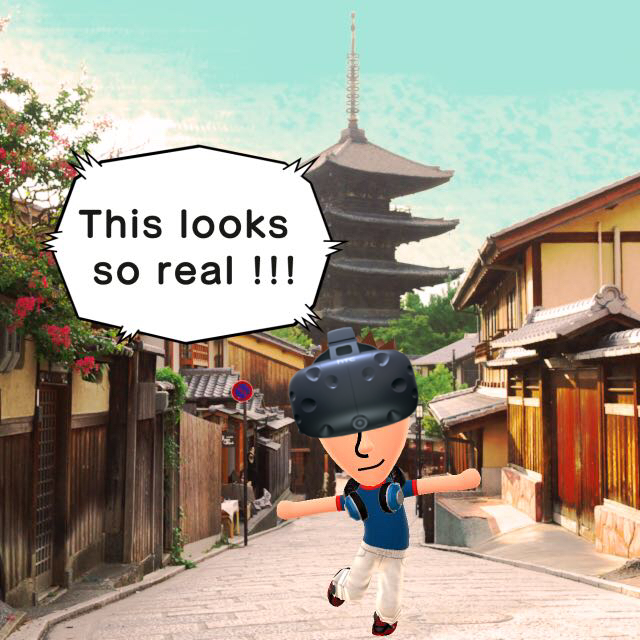

Erstellt von Michael Grönert (BadToxic)
Diese Folien: badtoxic.de/japan-2016 TODO
Auch auf Github: github.com/BadToxic/japan-2016
Keine Impfungen
Reisepass
DKB Visa
Steckdosen-Adapter
JR Pass
SIM Karte
Fukuoka
Ōsaka
Kyōto
Tōkyō

Air France
München - Tōkyō - Fukuoka
Tōkyō - München
20. Jubiläum
271.224 Besucher
614 Aussteller (345 Ausland)
Business Days 15. & 16.09.
Presse-Ausweis-Bild TODO
Ehrenamtlicher Redakteur
Simon als Freelancer
TGS = Tokyo Girl Show?
TODO: Mädchen-Kollage
TODO: VR Bilder
Die großen Spiele kommen
VR scheint bereits normal
Neue Eingabegeräte
...
...

Homepage: badtoxic.de
Twitter: @BadToxic